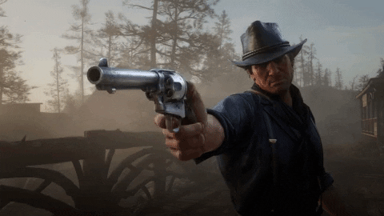

Why gaming?
Gaming, for me, isn't just a hobby;
it's a world where I can escape when the real one
feels empty. It's a place where I can find purpose
and connection, even if those connections are digit
and my purpose is to conquer virtual realms. When life
-al outside the screen feels devoid of love, compani
-onshipor social engagement, gaming offers a vibrant,
interactive alternative. Here, my skills are recognized,
my presence matters,and every victory, big or small,can
provide a much-needed sense of achievement in an otherwi
-se isolating existence. It's a bittersweet comfort,
I guess. It fills a void, even if it's not quite the
same as real-world connections.
Below is ranked list of my favorite games
- Red Dead Redemption 2

A masterpiece of storytelling and open-world design,
set in the dying days of the American Wild West.
- God of war 2018 and God of was Ragnarok

Epic tales of gods and monsters, with stunning visuals
and deep emotional storytelling.
- The Last of us 2
A gripping narrative that explores the depths of human emotion
in a post-apocalyptic world.
Well, i got tons of games to yapp about, but these three are the ones that really hit home for me. They ain't just games; they're like stories that stick with you, ya know? Each one has its own vibe and feels, and they all got something special that makes them stand out in my book.
Check out my other favorite things: